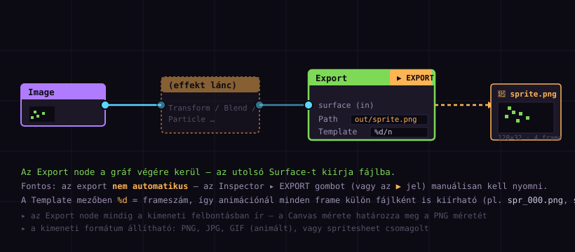
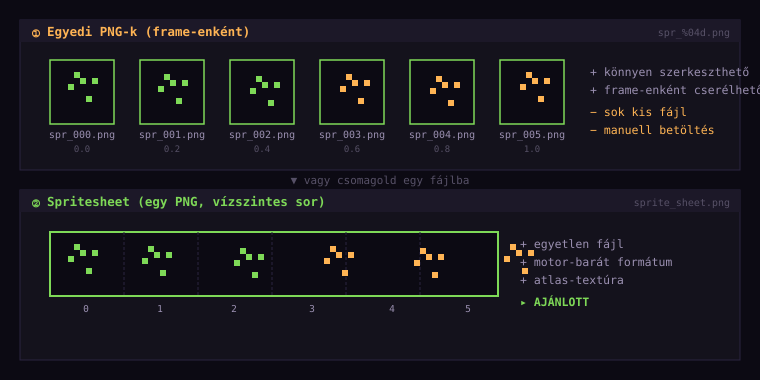
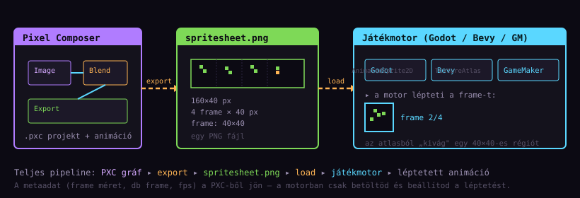

Import / Export workflow
— a spritesheet pipeline
Az 1–3. részben felépítettél egy gráfot, animáltad, és a Preview-ben már lüktetett a glow-ed. Most jön az utolsó lépés: hogyan juttassuk ki ezt a játékmotorba. Megtanulod az Export node működését (és a #1 kezdő csapdát: a manuális trigger), a spritesheet formátumot, és hogyan tölti be a Godot / Bevy / GameMaker az animációdat.
Mit importál a PXC?
A PXC két irányban dolgozik: be importál képeket (ezeket alakítja/dúsítja effekt-tel) és ki exportál Surface-eket (PNG, spritesheet, GIF). Előbb nézzük a bejövő oldalt, mert az export megértéséhez tudni kell, honnan jön az input.
| Formátum | Mit csinál vele | Tipikus forrás |
|---|---|---|
PNG / JPG | Egyetlen képként tölti be (statikus Surface). | Bármilyen képszerkesztő, Aseprite export, 3D render. |
.aseprite | Közvetlenül beolvassa — rétegeket, frame-eket, palettát is. | Aseprite (nem kell előbb exportálni!). |
GIF | Animált képként — minden frame külön Surface frame. | Kész animáció, webes forrás. |
| drag & drop | Bármelyik fenti formátum behúzható a Graph-ra. | Fájlkezelőből egyenesen a PXC-be. |
A PXC közvetlenül olvassa az Aseprite fájlokat — nem kell előbb PNG-be exportálnod. Az Image node-nak csak a .aseprite fájlt adod meg Path-nak, és a PXC beolvassa a rétegeket, a frame-eket, sőt a palettát is. Így az Aseprite-ban szerkesztett sprite-ot módosítva a PXC gráf automatikusan frissül.
Aseprite és PNG — melyiket mikor?
A gyakori kérdés: „Aseprite fájlt adjak meg, vagy előbb PNG-be exportáljak?" A válasz a munkafolyamattól függ:
A sprite-om még változik (Aseprite-ban szerkesztem)? ├─ IGEN → add meg a .aseprite fájlt közvetlenül │ ▸ előny: automatikus frissítés, rétegek beolvasása │ ▸ hátrány: a PXC projekt az Aseprite fájltól függ │ └─ NEM (kész, „fagyasztott" sprite) → exportálj PNG-be, azt add meg ▸ előny: önálló, hordozható projekt ▸ hátrány: ha módosul a sprite, újra export kell
.pxc) csak a Path-ot tárolja — magát a képet nem, így mindig kell a forrásfájl a projekt mellé..pxc projektet, a képeket veled kell vinned. A PXC csak a fájlútvonalat tárolja, nem ágyazza be a képet. Ha az útvonal megszakad (pl. másik gépen más a mappa), az Image node „pirosra" vált — újra ki kell választani a Path-ot. Pro tipp: a projekt mellé tegyél egy assets/ mappát, és onnan hivatkozz.
Az Export node
Az Export node (zöld fejléc, Render/Export kategória) a gráf végére kerül — az utolsó Surface-t kiírja fájlba. Ez az a pont, ahol a gráfod „kikerül" a fájlrendszerbe.

Inspector ▸ Path adja meg a kimeneti fájlt, a Template a névsablont. A ▶ EXPORT gomb (zöld kiemelés) a tényleges kiírást indítja.- Jobb-klikk → Add Node ▸ Export ▸ Export.
- Húzd az utolsó node (általában Preview, vagy a Blend/Transform kimenete) kimenetét az Export bemenetére.
- Jelöld ki az Export node-ot. Az Inspector-ban állítsd be a
Path-ot (hova kerüljön a fájl). - Állítsd a
Template-et (a fájlnév sablon, lásd 5. fejezet). - Nyomd meg a ▶ EXPORT gombot az Inspector tetején (a zöld kiemelés).
A ▶ EXPORT gomb — a #1 kezdő csapda
Itt van a Pixel Composer leggyakoribb kezdő problémája — a fórumokon, itch.io community-n többször visszatérő kérdés:
.pxc projektet menti — a kimeneti PNG-t nem.
File ▸ Save (Ctrl+S) → a .pxc projekt-fájl (gráf, node-ok, paraméterek, animáció) — a munkádat menti, nem a kimenetet Inspector ▸ ▶ EXPORT → a kimeneti fájl (PNG / spritesheet / GIF) — ezt minden módosítás után újra kell nyomni!
Igen — a Preview node él, az automatikusan frissül, ahogy módosítod a gráfot. Tehát látod, mit csinálsz. De a fájlrendszerbe (a lemezre) csak a ▶ EXPORT gomb ír. Tehát: fejlesztés közben a Preview-t nézed, és csak akkor exportálsz, ha az eredmény már kész — vagy ha új frame kell a spritesheet-be.
%d jelölője automatikusan generálja az összes frame-et). Esetleg a külön Sprite Sheet node (lásd 6. fejezet) egyetlen PNG-t csinál az összes frame-ből — azt elég egyszer exportálni.
Template és %d — fájlnév-sablon
A Template mező egy fájlnév-sablont tartalmaz. Statikus képnél egyszerű (sprite.png), de animációnál vagy több kimenetnél speciális jelölőket használhatsz:
| Jelölő | Mit helyettesít | Példa |
|---|---|---|
%d | A frame sorszáma (0-tól vagy 1-től). | spr_%d.png → spr_0.png, spr_1.png… |
%04d | Frame sorszáma, nulla-padded 4 jegyre. | spr_%04d.png → spr_0000.png, spr_0001.png… |
{name} | A node vagy kép neve. | out_{name}.png |
%04d formátum (4 jegy, elé nullák) nem „kellék" — a legtöbb játékmotor és atlas-packelő ábécé-sorrendben tölti be a fájlokat. spr_1.png, spr_10.png, spr_2.png rossz sorrendet ad; spr_0001.png, spr_0002.png, …, spr_0010.png helyeset. Szokj rá a %04d-re.
PNG vs spritesheet
Animáció exportjánál két fő formátum közül választasz: egyedi PNG-k (frame-enként egy fájlt) vagy spritesheet (az összes frame egy PNG-ben). A különbség hatalmas — a játékmotorok nagy része a spritesheet-et preferálja.

spr_000.png…). Könnyen szerkeszthető, cserélhető, de sok kis fájl. ② Spritesheet: egyetlen PNG, a frame-ek vízszintesen (vagy rácsban) elrendezve. Egy fájl, motor-barát — ez az ajánlott.| Egyedi PNG-k | Spritesheet | |
|---|---|---|
| fájlok | Sok (24 frame = 24 fájl) | Egyetlen PNG |
| betöltés | Manuális, egyesével | Egyszer, atlas-ként |
| memória | Több foglalás, fragmentált | Egybefüggő, kompakt |
| atlas-pack | Külön lépés kell | Beépítve |
| frame-csere | Egy fájlt cserélsz | Újra export kell |
| ajánlott | Prototípus, egyedi frame | Game-dev pipeline |
Sprite Sheet node
A spritesheet-hez nem (csak) az Export node kell — van egy külön Sprite Sheet node (Generate vagy Render kategória). Ez a node veszi az animált Surface-t, és elrendezi a frame-eket egyetlen képre (vízszintesen vagy rácsban). Ennek a kimenetét azután egy Export node kiírja.
Image ─▸ Blend (animált Opacity) ─▸ Sprite Sheet ─▸ Export ▲ az animáció minden frame-jét vízszintesen egymás mellé rakja → egyetlen PNG, pl. 256×64 px (4 frame × 64 px széles)
GIF és videó — egyéb formátumok
A PNG és spritesheet mellett a PXC más formátumokat is tud:
| Formátum | Mire jó | Mikor használd |
|---|---|---|
| GIF (animált) | Egyetlen fájl, beágyazott animáció. | Demó/megmutató megosztása, social media, README-ben. |
| MP4 / WebM | Videó, tömörített. | Hosszabb animáció, videós demó. |
| JSON (atlas metaadat) | A spritesheet elrendezésének leírása (frame méretek, pozíciók). | Motortól függ — Godot/Spine/Bevy atlas-packelés. |
A teljes pipeline — PXC-től motorig
Tegyük össze az egészet. A teljes munkafolyamat egy ábrán:

spritesheet.png ──▸ szélesség: 256 px (4 frame × 64 px) magasság: 64 px frame-db: 4 frame-méret: 64 × 64 px fps: 24 (vagy amennyit állítottál) loop: igen A motor ezeket a metaadatokat külön beállítja (nem a PNG-ből olvassa ki). Ezért fontos, hogy jól jegyezd fel — vagy JSON metaadatot exportálj.
256 × 64 px lesz — ezt a 4 számot (szélesség, magasság, frame-db, fps) jegyezd fel a motorhoz.Godot / Bevy / GameMaker
Három gyakori motorral mutatjuk be a betöltést. A PXC-ből a spritesheet.png + metaadat jön ki; a motorban ezeket állítod be.
① Godot (4.x)
- Húzd be a
spritesheet.png-t ares://mappába. - Kattints rá az FileSystem-ben → az Inspector-ban a Import fülön válaszd
2D Pixelpresetet (a „nearest" filter miatt) és nyomd meg a Reimport gombot. - A Scene-ben hozz létre egy Sprite2D node-ot, és állítsd be a
Texture-t a spritesheet-re. - A Sprite2D Inspector-ban nyisd le a
Animationszekciót:Hframes = 4(vízszintes frame-ek száma),Vframes = 1. - Adj hozzá egy AnimationPlayer vagy szkriptet a frame léptetéséhez.
② Bevy (Rust)
A Bevy-ben a TextureAtlas a megfelelő eszköz. A spritesheet PNG-t betöltöd, és egy TextureAtlasLayout-tal megadod a frame-ek rácsát:
use bevy::sprite::{TextureAtlasLayout, Sprite}; fn setup( mut commands: Commands, asset_server: Res<AssetServer>, mut layouts: ResMut<Assets<TextureAtlasLayout>>, ) { // a PXC-ből exportált spritesheet.png let texture = asset_server.load("spritesheet.png"); let layout = layouts.add(TextureAtlasLayout::from_grid( UVec2::new(64, 64), // frame mérete 4, // vízszintes frame-ek 1, // függőleges None, None, )); commands.spawn(( Sprite { texture: Some(texture.clone()), texture_atlas: Some(layout.into()), ..default() }, // Animation léptető komponens AnimationTimer::default(), )); }
Az AnimationTimer egy egyedi komponens, ami Timer::from_seconds(1.0/24.0, TimerMode::Repeating)-ként lépteti a frame indexet.
A Bevy alapból lineáris mintavételezést használ, ami elmosja a pixel art-ot. Állítsd a ImagePlugin::default_nearest()-re a default_plugins-ben — ez a teljes app-ra érvényesíti a „nearest" filtert. Ezzel a sprite-ok élesen, pixesen maradnak, ahogy a PXC-ben is láttad.
③ GameMaker
- Sprites ▸ New Sprite → nevezd el, importáld be a
spritesheet.png-t. - A Sprite Editor-ban: Modify Mask ▸ Manual, állítsd a
Width-re a frame szélességére (64), aHeight-ra a magasságra. - A Sprite Editor-ban Frame ▸ Strip Frame → szélesség
64→ a GameMaker automatikusan vágja a frame-eket. - Állítsd be az
image_speed-et (a léptetés sebessége;1.0= a game-maker alap fps).
Gyakori csapdák — összefoglaló
A 4. rész tapasztalataiból és a fórumokon visszatérő kérdésekből gyűjtöttük össze a leggyakoribb problémákat:
| Probléma | Mi okozza | Megoldás |
|---|---|---|
| „Nem íródik ki a fájl" | Az Export node nem automatikus. | Nyomd meg az Inspector ▸ ▶ EXPORT gombot minden módosítás után. |
| „A kép elmosódott a motorban" | Lineáris filter (nem nearest). | Godot: 2D Pixel preset. Bevy: ImagePlugin::default_nearest(). |
| „A frame-ek össze-vissza jönnek" | Hibás frame-sorrend vagy sprite-sheet packing. | Használj %04d formátumot; ellenőrizd a Sprite Sheet node horizontal beállítását. |
| „A frame széle átfolyik" | Padding hiánya a spritesheet-ben. | Állíts be 1–2 px padding-et a Sprite Sheet node-on. |
| „Nem találom a képet más gépen" | Relatív útvonal megszakadt. | Vidd az assets/ mappát is; vagy Project ▸ Bundle. |
| „Csak az első frame jelenik meg" | A motor frame-élező nincs beállítva (Hframes/Vframes). | Godot: Hframes = 4. GameMaker: Strip Frame. |
| „A GIF gyenge minőségű" | A GIF csak 256 színt támogat. | Használj spritesheet PNG-t a játékba; a GIF csak megosztáshoz. |
.pxc) és a kimenet (▶ EXPORT). Ha csak exportálsz, de nem mented a projektet, és bezárod a PXC-t, elveszik a gráfod — hiába van meg a PNG. Mindig mindkettőt csináld meg, mielőtt bezárod.
Összefoglaló & merre tovább?
| Fogalom | Tanultad |
|---|---|
| import | PNG / JPG / .aseprite / GIF — az Aseprite közvetlen beolvasás nagy dolog. |
| Export node | A gráf végére kerül, az utolsó Surface-t kiírja fájlba. |
| ▶ EXPORT gomb | Manuális trigger — nem automatikus, ezt a #1 kezdő csapdát jegyezd meg. |
| Template %d | Fájlnév-sablon frame-ekhez; %04d a nulla-padded sorrendért. |
| spritesheet | Egy PNG, frame-ek vízszintesen — a motor-barát, ajánlott formátum. |
| Sprite Sheet node | Elrendezi a frame-eket egy PNG-re; padding a vérzés ellen. |
| engine pipeline | PXC → spritesheet.png → Godot / Bevy / GameMaker, frame léptetés. |
| nearest filter | A pixel art élességéhez kötelező — ne lineáris. |
Vedd elő a 3. részes pulzáló glow projektedet. Rakj rá egy Sprite Sheet node-ot, kösd rá az Export-ot, és ments ki egy glow_sheet.png-t (4 vagy 6 frame). Aztán töltsd be a választott motorodba (Godot/Bevy/GameMaker) és léptesd — látnod kell a lüktető glow-t a játékodban is. Ez az első tényleges game-dev pipeline végigviteled.
Lent: ahogy a játékmotor megjeleníti — csak egyetlen frame, léptetve. Próbáld ki a Play/Pause-t és az FPS csúszkát!
A sorozat következő részei
- 5. rész — A Clone node: a második leggyakoribb kezdő csapda — a VFX adat statikus volta, és hogyan orvosolja a Clone.
- Középhaladó szint (6–11. rész): MK Blast tűz/robbanás, részecskék, effectors, feedback loop, texture mapping.
- Haladó szint: rigid body, fluid, 3D, procedural tileset, batch processing, és egy Bevy-integrációs lecke is.